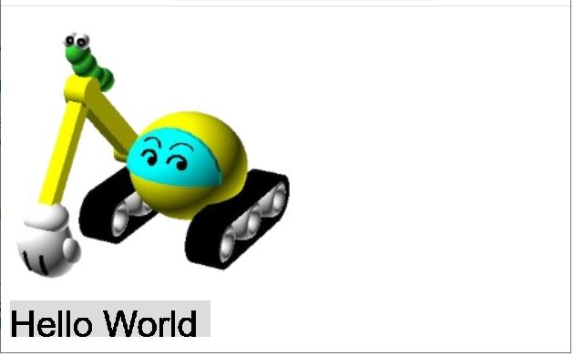
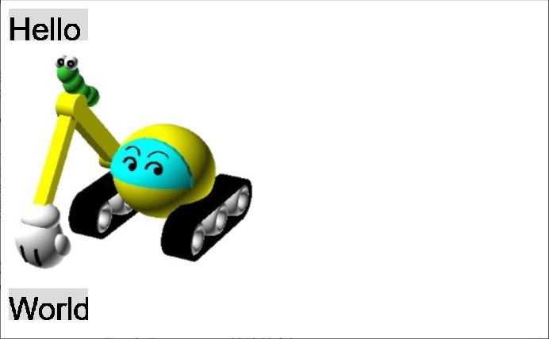

接續〈p5.js 起步走〉的問題，如何指定畫布的位置？甚至建立多個畫布？
如果想自行指定畫布位置，p5.js 的 canvas 可以指定其父節點，藉由設置父節點的 CSS 等特性，就可以調整畫布位置。例如，若想要 canvas 的父節點是 id 為 "helloworld 的 div：
<html>
<body>
<img src="https://openhome.cc/Gossip/images/caterpillar.jpg"/>
<div id="helloworld"></div>
<script src="js/p5.js"></script>
<script src="js/sketch.js"></script>
</body>
</html>
createCanvas 會傳回 p5.Renderer 實例，只要指定它的 parent 為 'helloworld' 就可以了，這時可以修改一下 sketch.js：
const fontSize = 32;
const txt = 'Hello World';
const grayLevel = 220;
const parentId = 'helloworld';
function setup() {
createCanvas(txt.length * fontSize / 2, fontSize).parent(parentId); // 設置父節點 id
background(grayLevel);
textSize(fontSize);
}
function draw() {
text(txt, 0, fontSize);
}
載入網頁之後，就可以看到以下的畫面：

當然，本質上 canvas 就是個 DOM 元素，如果想對 canvas 做點裝飾，就還是前端那些 CSS 之類的做法就可以了。
接著進一步地，可以建立兩個以上的畫布嗎？你可以建立一個 p5 實例，建立時指定一個回呼函式，該函式接受 p5 實例本身，接著如下對 p5 實例設置回呼：
new p5(p => {
const fontSize = 32;
const txt = 'Hello';
const grayLevel = 220;
const parentId = 'hello';
p.setup = function() {
// 設置各自的 canvas
p.createCanvas(txt.length * fontSize / 2, fontSize).parent(parentId);
p.background(grayLevel);
p.textSize(fontSize);
}
p.draw = function() {
p.text(txt, 0, fontSize);
}
});
new p5(p => {
const fontSize = 32;
const txt = 'World';
const grayLevel = 220;
const parentId = 'world';
p.setup = function() {
// 設置各自的 canvas
p.createCanvas(txt.length * fontSize / 2, fontSize).parent(parentId);
p.background(grayLevel);
p.textSize(fontSize);
}
p.draw = function() {
p.text(txt, 0, fontSize);
}
});
這稱為 p5.js 的實例模式（instance mode），相對地，先前文件的範例是以 p5.js 全域模式（global mode）撰寫，每個 p5 實例可以控制各自的畫布，因此可以指定各自的父節點，這邊故意設置了不同的父節點：
<html>
<body>
<div id="hello"></div>
<img src="https://openhome.cc/Gossip/images/caterpillar.jpg"/>
<div id="world"></div>
<script src="js/p5.js"></script>
<script src="js/sketch.js"></script>
</body>
</html>
載入網頁之後，就會看到以下的畫面了：

如果你熟悉前端，會覺得這好像是在做名稱空間管理是吧？也沒錯！另一方面，p5.js 在開發時採用 ES6 模組，而官網 Download 提供的版本，是打包後單一 js 檔案的版本，沒有採用 ES6 模組，有些開發者會想要讓這個版本的 js 能結合模組使用，確實是有些方式可以這麼做，出發點是這邊談到的做法，不過要透過一些 hack，這不是這系列文件的重點，有興趣可以自行探索一下。